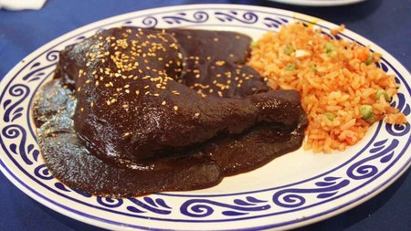

INGREDIENTES
1/4 Taza Almendra peladas
1/4 Taza Cacahuate con sal sin cáscara, sin sal
3 Piezas Jitomate rojo, sin semillas
1/2 Taza Agua
1 Pieza de Chile chipotle seco
3/4 Tableta Chocolate para mesa
1 Cucharada de Consomé de pollo en polvo
1/2 Cucharadita Cebolla en polvo
1/4 Cucharadita Sal
2 Piezas Pechuga de pollo pechuga de pollo, sin piel, cocidas y partidas a la mitad
1/4 Taza Ajonjolí tostado
1 Cubo Concentrado de Tomate con Pollo
PROCEDIMIENTO
Licuar
Licúa las almendras con los cacahuates, los jitomates, el agua, el chile chipotle, el consomé de pollo en polvo, el Chocolate para Mesa y el cubo de Concentrado de Tomate con Pollo . Calienta la salsa a fuego medio por 5 minutos, moviendo constantemente para evitar que se pegue.
Bañar
Baña cada mitad de pechuga de pollo con el mole y decora con el ajonjolí. Sirve acompañado con arroz rojo.